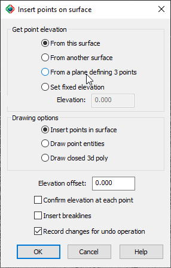

|
|
Toolbar:
Menu: CAD-Earth > Mesh > Mesh Explorer. Mesh Explorer node:
Context Menu: Vertices > Insert
|
|
|
Command line: CE_MESHEXPLORER
CAD-Earth version: Premium. |
(1).png)
.png)
.png)
(1).png)
Command description:
This command will allow you to insert new vertices on a mesh or draw point or closed 3D polyline entities, calculate the surface's elevation from another comparison surface, or a plane defining 3 points or using a fixed elevation. An elevation offset from the reference surface can be specified, and the calculated elevation can be changed at each point if desired.
Break lines can be created when inserting points to modify the mesh.

ØGet point elevation.
The z coordinate will be calculated by projecting the points over the reference surface along the Z-axis direction.
•From this surface. Selected points will be projected onto the terrain mesh.
•From another surface. Selected points will be projected onto another terrain mesh selected.
•From a plane defining 3 points. Specifying three points, a temporary plane will be created where the points will be projected.
•Set fixed elevation. The z elevation for each point will be set to this value.
ØDrawing options.
•Insert points on surface. A new vertex will be inserted in the mesh for each point selected.
•Draw point entities. Points will be drawn without modifying the mesh.
•Draw closed 3d poly. For each point specified, a 3d polyline vertex will be created, closing the polyline after the last point is specified.
•Elevation offset. This value will be added to the point elevation.
•Confirm elevation at each point. After specifying each point, the value can be modified if needed.
•Insert breaklines. After specifying the first point, a breakline segment will be created, reordering the mesh so that no triangle side intersects or cross the segment.
•Record changes for undo operation. This option can be unchecked to avoid performing an undo operation on meshes with a huge number of vertices, but changes can't be undone.
Tips:
•You can select the resulting point and 3d polyline entities to create another mesh to calculate earth take off volumes or comparison purposes.
Copyright © 2023 Arqcom Software
Google Earth© is a registered trademark of Google inc. All other trademarks are the property of their respective owners.